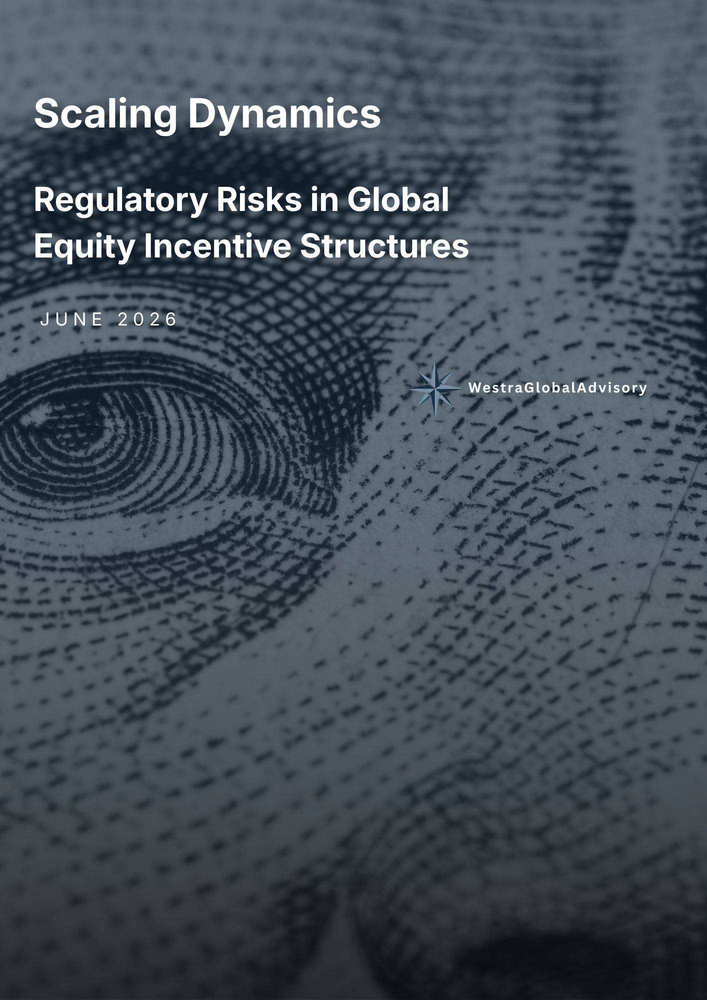

Jun 2026Scaling Dynamics: Regulatory Risks in Global Equity Incentive Structures
This brief examines how compensation design in fast-scaling companies like Hurdle can create misaligned incentives, driving behaviour that conflicts with regulatory expectations and internal risk appetite. The analysis maps key risk pathways from incentive structure to conduct outcome, identifying where the greatest vulnerabilities sit and what strategic adjustments would bring compensation design into better alignment with governance and compliance frameworks.